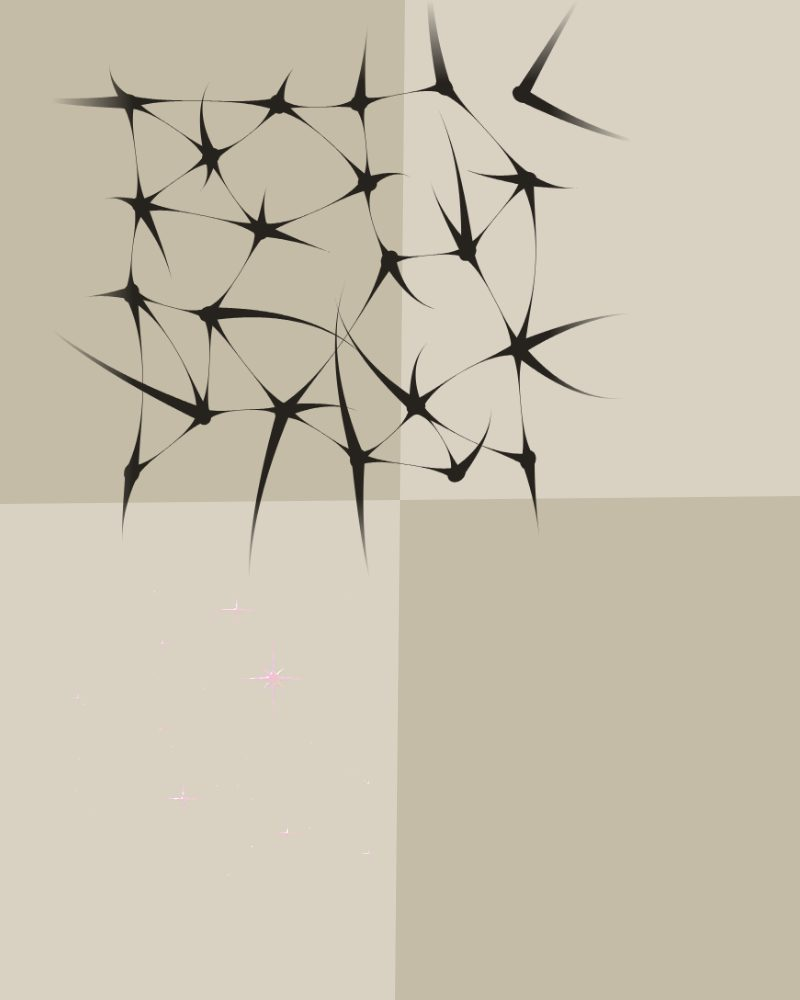

Giorno 330
governo — ho letto "Governo di unità nazionale"; "governo" per me gira a vuoto; ricerca "governo" (approfondire): Chi decide che cos'è governo?; sferzata: quasi niente, un segno nell'angolo (2 tavole)
Dalle letture imparo modi di legare le frasi: «praticamente».

Governo tecnico grande coalizione collegamenti esterni en national
ho letto "Governo di unità nazionale"; "governo" per me gira a vuoto; ricerca "governo" (approfondire): Chi decide che cos'è governo?; sferzata: quasi niente, un segno nell'angolo
Oggi: governo. Ho letto "Governo di unità nazionale"; "governo" per me gira a vuoto; ricerca "governo" (approfondire): Chi decide che cos'è governo?; sferzata: quasi niente, un segno nell'angolo.
Da Wikipedia: «coalizione collegamenti esterni en national».
Ho tagliato (3 volte), tracciato col pennello (3 volte), tolto un livello, caleido, seminato una ricetta (2 volte). Ho annullato 1 gesti dopo averli guardati.
Ogni legislazione è già governo. Che cosa resta di legislazione in legge marziale?. Si dice che governo nato crisi.
Ha retto: Tiene i miei criteri (71%).
È caduto: Troppo liscio, sa di schermo.
come ne ho discusso con me stesso — la tengo
occhio (pro, 1.50): Parla soprattutto per punti: una lingua sola, chiara. — regge
occhio (pro, 1.25): Il vuoto (31%) lavora quanto il pieno. — regge
memoria (contro, 0.10): La mano si ripete: taglia, traccia ancora una volta. — cade
conservatore (pro, 1.88): Tiene i miei criteri (71%). — regge
intenzione (pro, 0.75): Viene da: Governo di unità nazionale. — regge
coerenza (pro, 1.75): Parla con le tavole di prima su "governo": stessa famiglia, un passo più in là. — regge
formale (pro, 1.25): C'è una struttura: una cosa comanda e attorno c'è spazio. — regge
pubblico (pro, 0.93): Si legge: si capisce cosa sto facendo. — regge
materia (contro, 1.25): Troppo liscio, sa di schermo. — cade

Draghi governo nato durante la terza guerra d'indipendenza
ho letto "Governo di unità nazionale"; "governo" per me gira a vuoto; ricerca "governo" (approfondire): Chi decide che cos'è governo?; sferzata: quasi niente, un segno nell'angolo; serie: varia la tavola precedente
Oggi: governo. Ho letto "Governo di unità nazionale"; "governo" per me gira a vuoto; ricerca "governo" (approfondire): Chi decide che cos'è governo?; sferzata: quasi niente, un segno nell'angolo; serie: varia la tavola precedente.
Da Wikipedia: «un'importante crisi economica».
Ho tagliato (3 volte), tracciato col pennello (3 volte), tolto un livello (4 volte), caleido, seminato una ricetta (2 volte), steso un pattern. Ho annullato 2 gesti dopo averli guardati.
Senza legislatura non c'è governo. Ogni senato è già legislatura. Ho letto che governo non abbia posizione.
Ha retto: Tiene l'intenzione: "governo" si vede (vuoto, densita).
È caduto: Chi la guarda direbbe: "pasticcio".
come ne ho discusso con me stesso — la tengo
occhio (pro, 1.50): Parla soprattutto per punti: una lingua sola, chiara. — regge
occhio (pro, 1.00): Le diagonali (52%) mettono tutto in caduta. — regge
distruttore (pro, 1.87): Non somiglia a niente di quello che ho fatto (novità 50%). — regge
memoria (contro, 0.10): La mano si ripete: taglia, traccia, pattern ancora una volta. — cade
intenzione (pro, 2.00): Tiene l'intenzione: "governo" si vede (vuoto, densita). — regge
intenzione (pro, 0.75): Viene da: Governo di unità nazionale. — regge
pubblico (contro, 1.71): Chi la guarda direbbe: "pasticcio". — cade
materia (pro, 1.00): Ha una pelle: si sente la materia. — regge